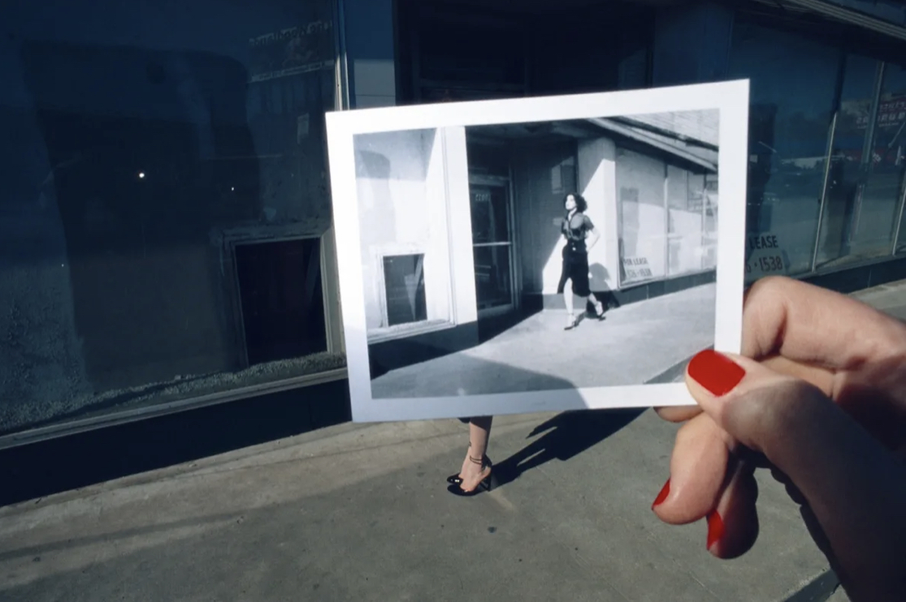

Guy Bourdin
Charles Jordan, AD Campaign (1977)
last
semester i came across this photographer, who works mainly in the field of fashion photography. i was blown away by his bold and
surreal
style. he captures provocative images while using almost
hyper
real colors. this photo concept is so fire.
